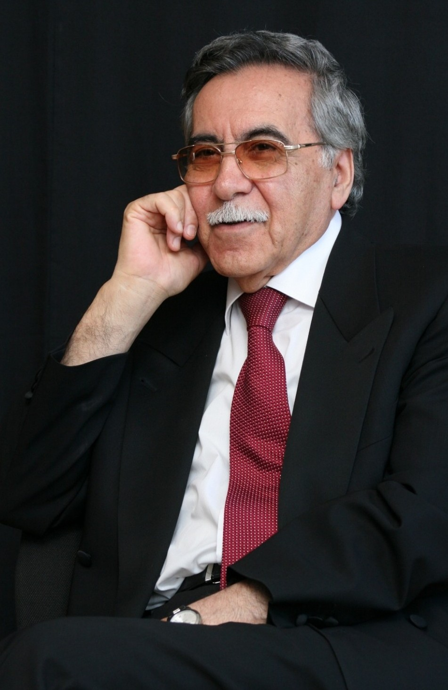
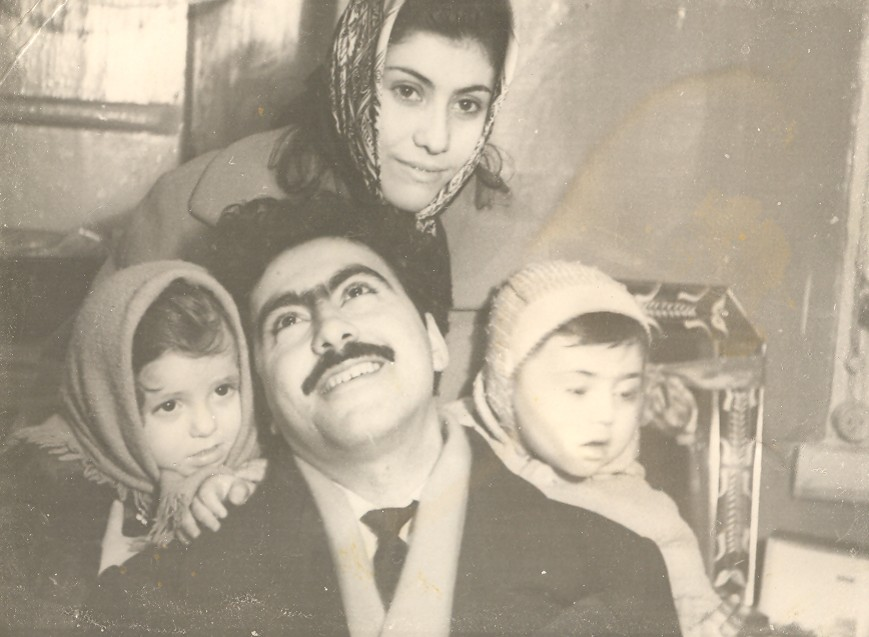
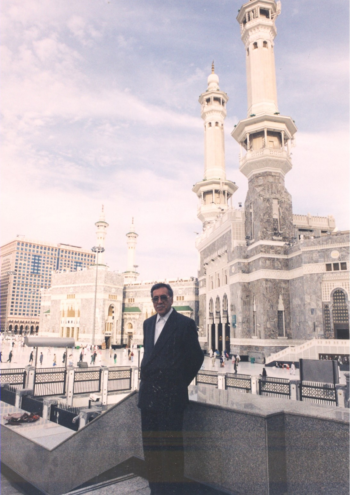

Bakı şəhərində anadan olub
Aqşin Əlisəttar oğlu Babayev 23 noyabr 1936-cı ildə Bakı şəhərində anadan olmuşdur. Sonralar Azərbaycan jurnalistikası, ədəbiyyatı və elminə mühüm töhfələr verəcək ziyalının həyat yolu bu şəhərdə başlamışdır.

Aqşin Babayev Azərbaycan ədəbiyyatında özünəməxsus dəst-xətti ilə seçilən nasir, şair və dramaturqdur. Onun yaradıcılığında insan, həyat, Vətən sevgisi, məhəbbət və mənəvi dəyərlər əsas yer tutur. Bu səhifə oxucuları müəllifin zəngin ədəbi irsi, hekayələri, povestləri, romanları və poetik dünyası ilə tanış edir.
Əmək fəaliyyətinə jurnalist kimi başlayan Aqşin Babayev peşəkar fəaliyyəti boyunca müxtəlif məsul vəzifələrdə çalışmışdır. Türkiyədə tərcüməçi kimi fəaliyyət göstərmiş, sonralar Azərbaycan Dövlət Televiziya və Radio Verilişləri Komitəsində sədr müavini, Milli Məclisin Mətbuat xidməti şöbəsinin rəhbəri olmuşdur. Onun həyat yolu zəngin təcrübə, davamlı fəaliyyət və yaradıcılıq axtarışları ilə yadda qalmışdır.

Yazıçı, dramaturq və alimin həyatına interaktiv səyahət.
XRONOLOGİYANI KƏŞF ET ↓
Jurnalistika, ədəbiyyat, elm və təhsil sahələrində Aqşin Babayevin zəngin fəaliyyət və yaradıcılıq dünyası.
Aqşin Babayevin peşəkar fəaliyyəti Azərbaycan radio və televiziyası, radio jurnalistikası və xarici yayımlarla bağlıdır.
Radio və televiziya sahəsindəki işi, radio və xarici yayımlar sahəsindəki rəhbər fəaliyyəti, Azərbaycan radio jurnalistikasının inkişafına verdiyi töhfə onun media irsinin əsas istiqamətlərindəndir.
Onun jurnalist fəaliyyəti ilə bağlı radio proqramları arasında Körpü və Biri var, biri yox xüsusi yer tutur.
Körpü Şimali və Cənubi Azərbaycanı birləşdirən mədəni və mənəvi missiya daşıyırdı. Proqramın adı kimi, məzmunu da insanlar və ortaq mədəni yaddaş arasında əlaqə yaratmağa xidmət edirdi.
Aqşin Babayevin ədəbi kimliyi şair, nasir və dramaturq yaradıcılığını bir araya gətirir; onun irsi poeziya, hekayə, roman və pyesləri əhatə edir.
Vətən sevgisi, insanlıq dəyərləri, sədaqət, təbiət, xatirələr, həyat və zaman poeziyasının əsas mövzularıdır.
Hekayə, roman və digər nəsr əsərləri ilə yanaşı, dramaturgiya və pyesləri də onun yaradıcılığının mühüm hissəsidir.
Kişilər az yaşadı
Əsərləri və kitabları fərqli ədəbi janrlarda oxucuya çatmış, poeziya, nəsr və dram yaradıcılığı ilə Azərbaycan ədəbiyyatına çoxşaxəli töhfə vermişdir.
Aqşin Babayevin elmi fəaliyyəti Nazim Hikmət irsinin, Azərbaycan və türk ədəbiyyatı əlaqələrinin, eləcə də türk dramaturgiyasının araşdırılmasına yönəlmişdir.
Nazim Hikmət haqqında tədqiqatları və bu mövzunu Azərbaycanda öyrənməyə verdiyi töhfə elmi irsinin əsas istiqamətlərindəndir.
Elmi araşdırmaları türk ədəbiyyatını və dramaturgiyasını əhatə edir; akademik nəşrləri və elmi məqalələri bu sahələrə dair tədqiqatlarını təqdim edir.
Elmi kitabları və nəşrləri müxtəlif ölkələrdə oxucuya çatmış, Azərbaycan və türk ədəbi-mədəni əlaqələrinin öyrənilməsinə xidmət etmişdir.
Aqşin Babayevin pedaqoji irsi universitet tədrisi, professor fəaliyyəti və ədəbi biliklərin gələcək nəsillərə ötürülməsi ilə bağlıdır.
O, universitetdə dərs demiş, professor kimi akademik və tədris məsuliyyətlərini yerinə yetirmişdir.
Ədəbiyyat və media sahələrindəki təcrübəsi ilə tədrisə və gənc mütəxəssislərin hazırlanmasına töhfə vermişdir.
Azərbaycan Dövlət Mədəniyyət və İncəsənət Universitetindəki fəaliyyəti onun akademik və pedaqoji irsinin tərkib hissəsidir.
Aqşin Babayevin elmi fəaliyyəti Azərbaycan və türk ədəbiyyatı arasındakı əlaqələrin öyrənilməsinə, Nazim Hikmət yaradıcılığının tədqiqinə və ədəbi biliklərin gələcək nəsillərə ötürülməsinə mühüm töhfə verib.
Hər əsər bir düşüncə, hər səhifə bir iz. Aqşin Babayevin söz dünyasını kəşf edin.
Düşüncələrdə yaşayan, zaman keçdikcə mənası daha da dərinləşən sözlər.

Burada Aqşin Babayevin mənbə ilə təsdiqlənmiş hikmətli sözünü yerləşdir.
Burada ikinci təsdiqlənmiş sitat yerləşəcək.
Burada üçüncü təsdiqlənmiş sitat yerləşəcək.
Burada dördüncü təsdiqlənmiş sitat yerləşəcək.
Bir insanın irsi yalnız yazdıqları ilə deyil, onu tanıyanların yaddaşında qoyduğu izlə də yaşayır.
Obyektiv, dürüst və ciddi, öz ölçüləri olan insan idi.
Jurnalist və teletənqidçi
Aqşin Babayev Azərbaycan ədəbiyyatının, elmi düşüncəsinin və mədəniyyətinin inkişafına dəyərli töhfələr vermiş görkəmli ziyalılardandır. Onun həyat yolu jurnalistika, ədəbiyyat, elmi araşdırmalar və zəngin yaradıcılıqla səciyyələnir.

Aqşin Babayev Azərbaycan jurnalistikası, ədəbiyyatı və elminin inkişafında özünəməxsus xidmətləri olan görkəmli ziyalıdır. Jurnalist, yazıçı, şair, dramaturq, alim, tərcüməçi və pedaqoq kimi fəaliyyəti ilə milli mədəniyyətimizin müxtəlif sahələrində dəyərli iz qoymuşdur.
Onun uzun illər davam edən jurnalistika fəaliyyəti Azərbaycan radio və televiziya məkanının inkişafı, milli radio ənənələrinin zənginləşdirilməsi və yeni yaradıcılıq layihələrinin həyata keçirilməsi ilə bağlıdır. “Körpü” və “Biri var, biri yox” kimi radio verilişləri onun fəaliyyətinin yaddaqalan nümunələrindəndir.
Ədəbi yaradıcılığı hekayə, povest, roman, şeir və dram əsərlərini əhatə edir. Elmi fəaliyyətində isə Nazim Hikmətin həyat və yaradıcılığının, türk ədəbiyyatının tədqiqinə xüsusi yer ayırmışdır. Tərcüməçilik fəaliyyəti ilə də Azərbaycan oxucusunu dünya ədəbiyyatının nümunələri ilə tanış etmişdir.
Pedaqoji fəaliyyəti boyunca jurnalistika, ədəbiyyat və sənət sahəsində yeni mütəxəssislərin yetişməsinə töhfə vermiş, dövlət və ictimai fəaliyyətində mühüm vəzifələr daşımışdır.
Aqşin Babayevin zəngin yaradıcılıq irsi, elmi araşdırmaları və jurnalistika məktəbi Azərbaycan mədəniyyətinin yaddaşında özünəməxsus yer tutur.